Parte I: A Fundação
No dia 1º de setembro de 1910, um grupo de operários do bairro do
Bom Retiro, em São Paulo, decidiu fundar um clube de futebol que representasse o povo. Inspirados
por uma equipe inglesa chamada Corinthian F.C., que fazia uma excursão pelo Brasil, os cinco
fundadores Ambrósio, Antônio Pereira, Rafael Perrone, Anselmo Correia e
Carlos Silva criaram o Sport Club Corinthians Paulista.
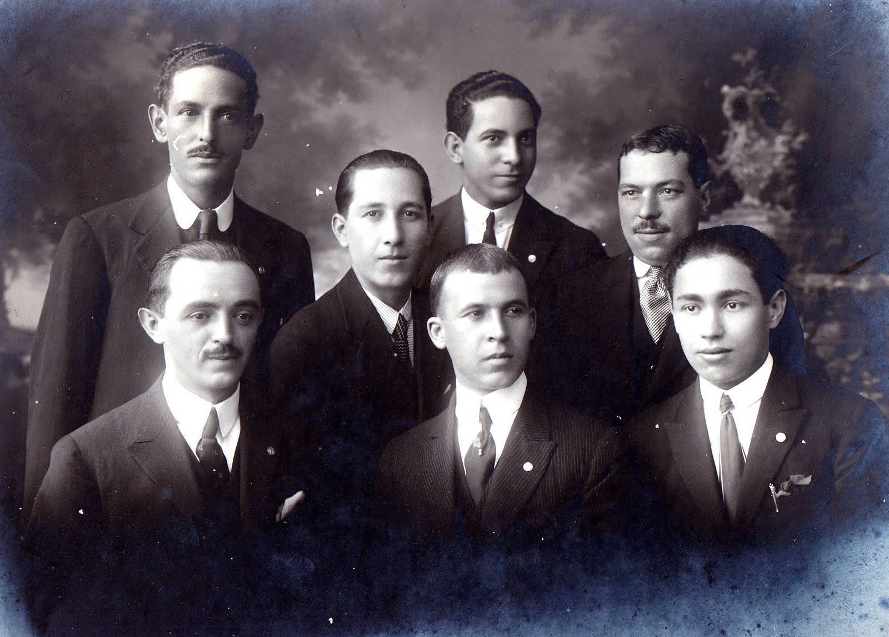
Parte II: O primeiro jogo
O primeiro jogo oficial do Sport Club Corinthians Paulista aconteceu em 10 de setembro de 1910,
apenas 12 dias após a fundação do clube. A equipe recém-criada enfrentou o União da Lapa, um time já
estruturado da região. O Corinthians acabou derrotado por 1 a 0, mas o resultado serviu como
incentivo para o grupo melhorar cada vez mais.
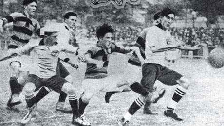
A primeira escalação do Timão foi composta por:
Valente, Perrone, Atílio, Lepre, Alfredo, Police, João da Silva, Jorge Campbell, Fabbi, César
Nunes e Joaquim Ambrósio.
Parte III: Primeiro título
O primeiro título da história do Corinthians foi conquistado em 1914,
com uma campanha perfeita no Campeonato Paulista.

Estatísticas da campanha:
Jogos: 10
Vitórias: 10
Gols marcados: 37
Gols sofridos: 9
Parte IV: 22 Anos Sem Títulos e a Força da Fiel Torcida
A Decisão Histórica de 1977
Em 1977, a quebra do jejum veio com o Campeonato Paulista, decidido em três jogos contra a Ponte
Preta. O Corinthians venceu o último jogo por 1 a 0, com o gol histórico de Basílio.
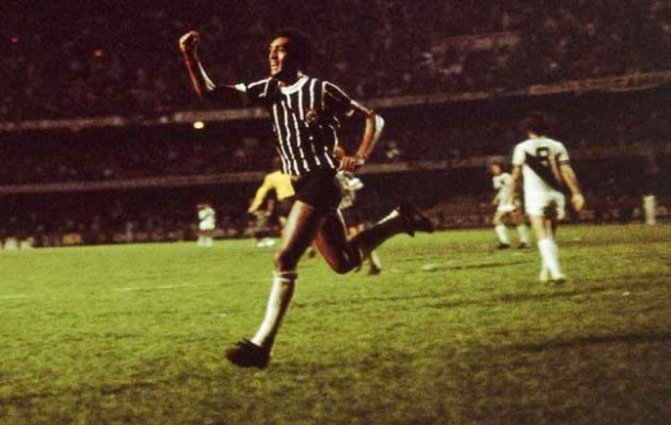
O grito de alívio da Fiel
A Fiel foi essencial em toda a campanha e lotou o Morumbi com mais de 145 mil torcedores. A
paixão da torcida transformou o estádio em um caldeirão preto e branco.
Final: Corinthians 1-0 Ponte Preta
Data: 13 de outubro de 1977
Local: Morumbi
Parte V: Democracia Corinthiana
Nos anos 1980, o Corinthians viveu um movimento revolucionário com jogadores como
Sócrates, Wladimir, Casagrande e Zenon, que participaram ativamente
das decisões internas do clube.
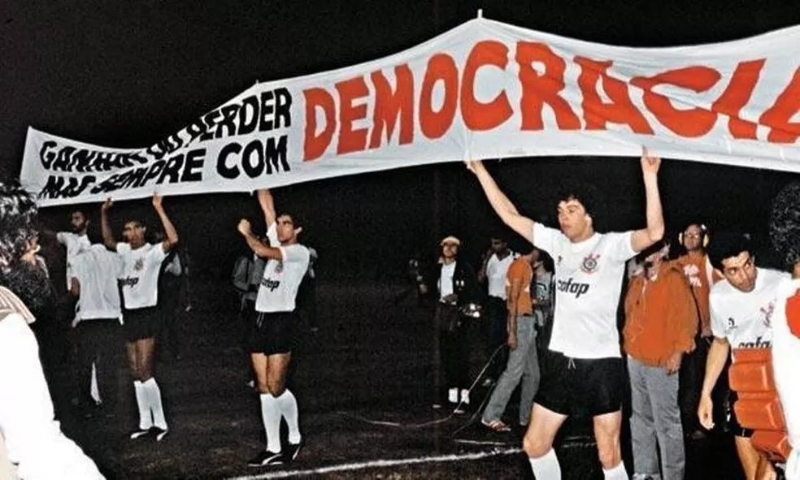
O movimento defendia liberdade e participação em plena ditadura militar, e conquistou os Paulistas
de 1982 e 1983.
Parte VI: Principais títulos
Primeiro Campeonato Brasileiro
Em 1990, o Corinthians conquistou seu primeiro Brasileirão, com um time aguerrido comandado por
Neto, Tupãzinho e Ronaldo Giovanelli.
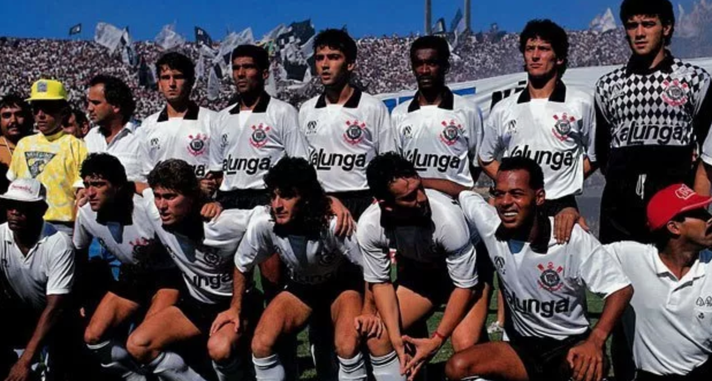
Estatísticas:
Jogos: 25
Vitórias: 12
Gols marcados: 23
O Mundo é Preto e Branco
Em 2000, o Corinthians se tornou o primeiro campeão mundial da FIFA, vencendo o Vasco no Maracanã.
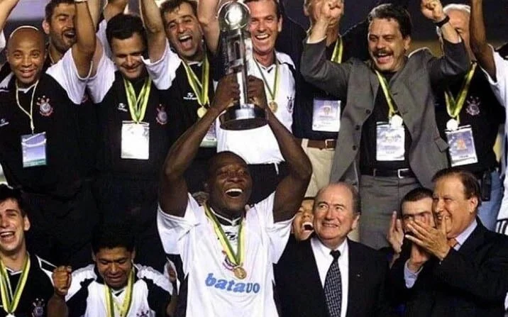
Final: Corinthians 0-0 Vasco (4-3 nos pênaltis)
A Glória na América – Libertadores 2012
O Corinthians conquistou sua primeira Libertadores de forma invicta, vencendo o Boca Juniors por 2 a
0, com dois gols de Emerson Sheik.
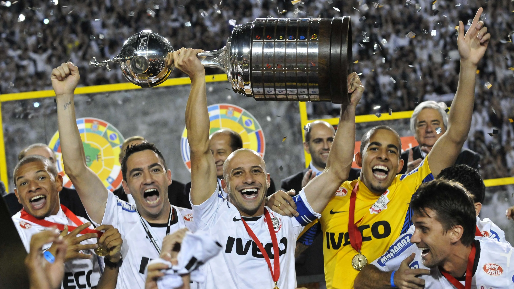
Jogos: 14
Vitórias: 8
Derrotas: 0
Gols sofridos: 4
A Conquista do Mundo – Mundial 2012
Contra o Chelsea, no Japão, Paolo Guerrero marcou o gol do título e Cássio brilhou como o herói da
final.
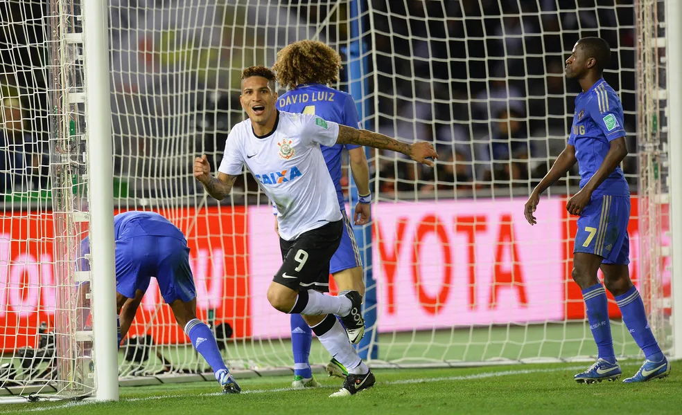
Final: Corinthians 1-0 Chelsea
As Invasões e a força da Fiel Torcida
1976 – Rio de Janeiro
A semifinal contra o Fluminense levou mais de 70 mil corinthianos ao Maracanã, na primeira grande
invasão.
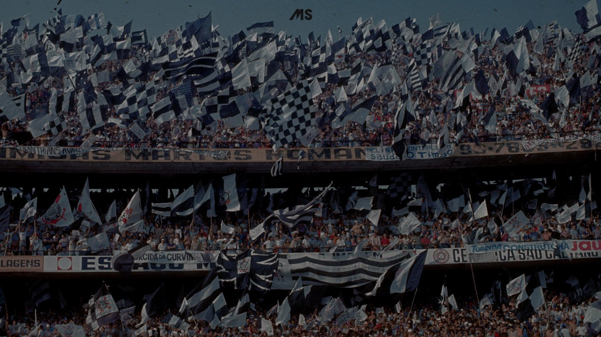
▶️ Assista ao vídeo da Invasão de 1976 no YouTube
2000 – Rio de Janeiro
O Maracanã novamente presenciou um mar preto e branco na final do Mundial de 2000.
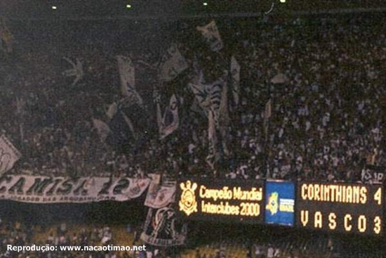
2012 – Japão
Mais de 30 mil corinthianos viajaram até o Japão, em uma das maiores invasões internacionais da
história.

▶️ Assista ao vídeo da Invasão de 1976 no YouTube
Evolução dos escudos (1910 – Atual)
A história do Corinthians também é contada por seus escudos, que evoluíram desde simples iniciais
até o símbolo moderno com âncora, remos e o pavilhão paulista.
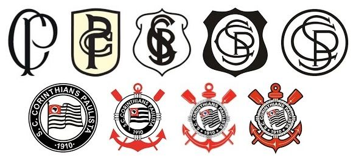
O escudo atual representa a força, a tradição e o orgulho do povo corinthiano.